Back to life - Your story of shadow puppet
 What is Shadow Show?
What is Shadow Show?
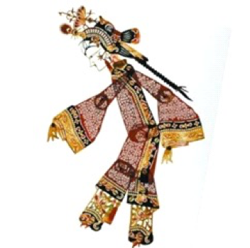 Shadow Show is one of the oldest kinds of drama in China, and is said to have its roots in the Han Dynasty. The leather puppets are painted with various colors and their designs follow the traditional moral evaluation and aesthetics coming from historical theaters, legends, stories of classical books or myths. Some are kind or wicked, beautiful or ugly. The positive figure has long narrow eyes, and a small mouth while the negative one has small eyes, a big forehead and droopy mouth. All the leather puppets are sculptures highly precise, simply shaped with decorative patterns. In Gansu province, the play is accompanied by Daoqing music, while in Jilin province, Huanglong music forms some of the basis of modern opera.
A sad confession from Emperor Wu
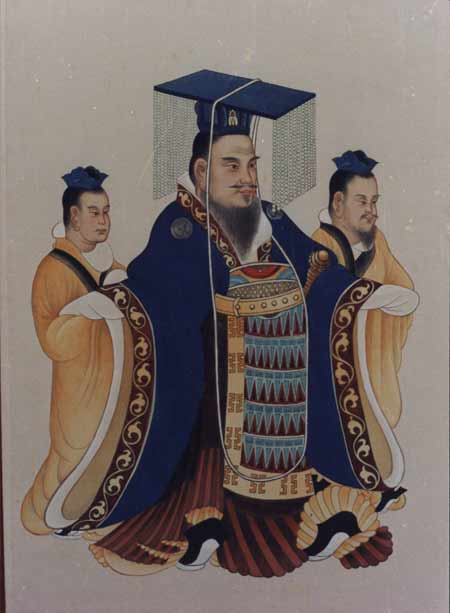 I was deeply in love with one of my concubines Lady Li, but the good times didn't last long and she fell sick afterwards. As I visited her, she covered her face and refused my request of taking a last look at her.I know that she wanted to stay beautiful in my mind so that I'll remember her forever - or was she afraid that all I favored was her appearance?
After she died of illness, I missed her so much that I almost lost my desire to reign. To help me get over the sadness, the minister ordered an occultist the minister, sculptured a wooden figure in the likeness of her and projected its shadow on a curtain- how clever he is! By looking at the shadow , I almost believed that it was her spirit coming back to me. Afterwards I heard from the craft men how they did this: Her joints were animated using 11 separate pieces of leather, and adorned with painted clothes.they made her shadow move under the light of the oil lamp, bringing her back to life.
Steps to make a shadow puppet
1. Leather Selection
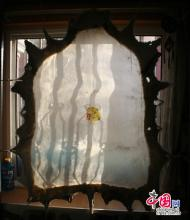The selection standard differs from regions. Generally the best choice is the leather of a young strong bull with black hair.
2. Leather Processing
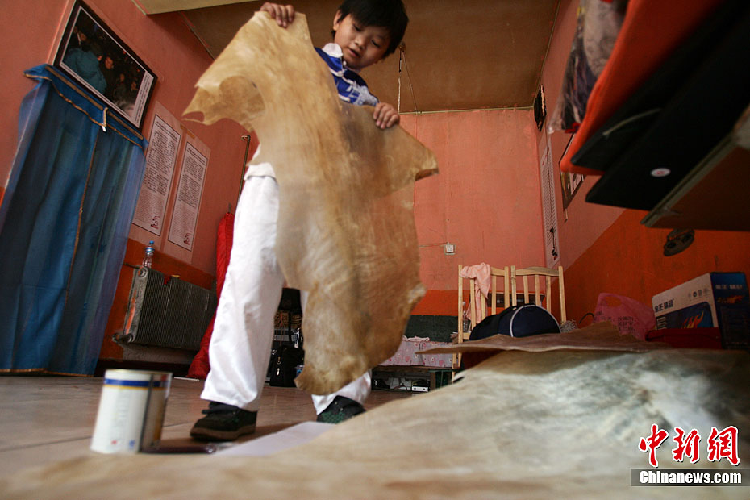Sink the leather into a liquor bended with calcium, sodium sulfide, sulfuric acid and ammonium sulfate until they are soft, meanwhile scrap the leather with a special tool and technique, until the the leather become lucent and clear and thin, which makes it more suitable for carving.
3. Drafting
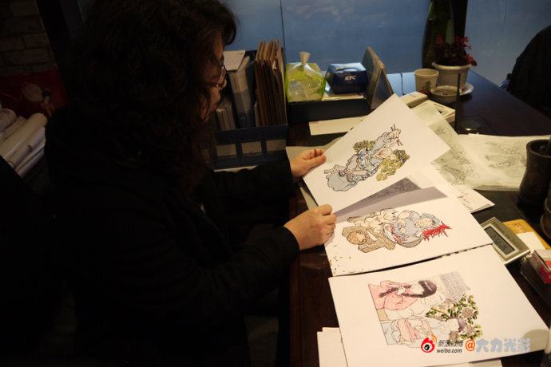Every single shadow puppet has their own draft, and these draft will be passed on from generation to generation (especially the classic ones).
4. Draft Corresponding
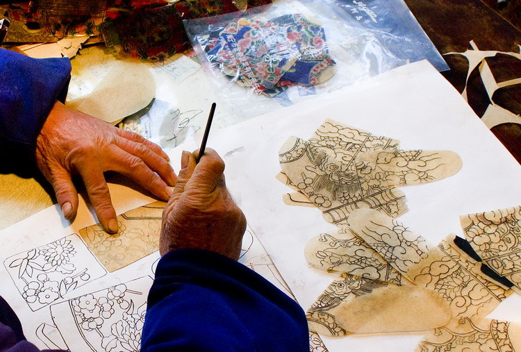The masters will cut the leather into pieces with different size, scrap and massage the leather with oil. Then the master use a stainless steel needle to transfer the draft onto the leather.
5. Carving
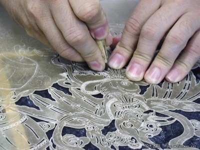A set of professional carving knife usually consists from 12 to 30 knifes.
6. Coloring
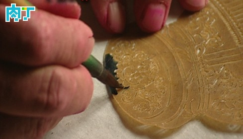The selection of the coloring material is very strict. The professionals usually choose natural resources such as red copper, vermilion and Pulan to make paints like red, green, apricot yellow, etc. Then heating the leather on the alcohol burner to make it mildly melt, meanwhile add color onto the heated part. Even though the paints are limited and simple, but an experienced master knows how to vary the colors by the controlling the temperature.
7. Ironing
This procedure is also called “sweating”. It’s a very important procedure to evaporate the extra hydrone and make the color lasts.
8. Combining
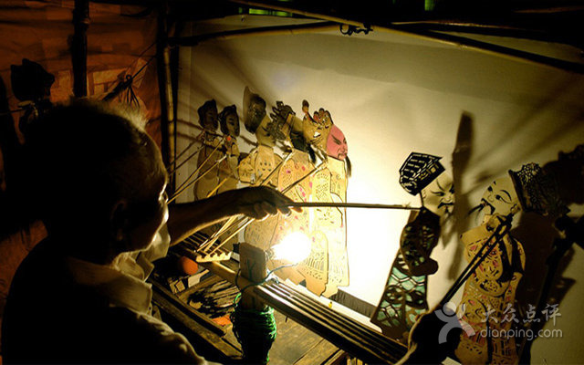In order to make the actions vivid and flexible, usually one single shadow puppet is separated into eleven different parts. They are connected with thin irony wires.
Now you know the procedure of making a shadow puppet. Do you want to get hands on experience and make your own unique shadow puppets? Here in our Cultural experience learning center, we have prepared for you the materials and simple equipment, and we have shadow puppet crafting masters here to help you. What we are hoping you to do, is to design your own puppet figure, make it into a real shadow puppet, then make a simple video to present a story using your puppets- you can do it alone, or together in groups with your friend, it’s going to be so much fun! All you need is your imagination, and have fun!
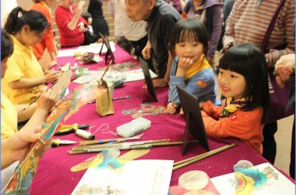See below is a video of students from Xi’an Xingzhi Highschool performing with their “Spongebob puppets”!
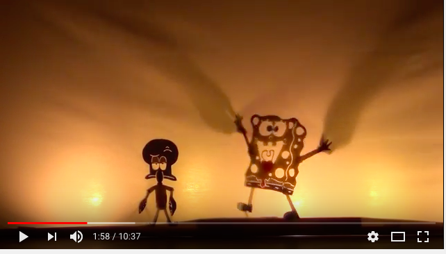